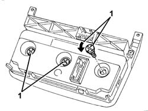

5040D28 bulb/s of climate control illumination r r
- Path
- Procedures > 50 AUXILIARY UNITS > 5040 AIR CONDITIONING CASING AND COMPONENTS > 5040D air conditioner controls > 5040D28 bulb/s of climate control illumination r r
- Kind
- repair procedure (removal / refitting; the operation number is the code)
- Applies to
- all engines; all production periods
- Interactive page
- https://sloeber94.github.io/elrnDB-a147/en/#/3025445
Applies to: all engines; all production periods
7040A12 removable box on facia - arrange
5040D17 control unit with manual air conditioner knobs and buttons r r
1. Rotate and withdraw the bulb.

Applies to: all engines; all production periods
Check that the bulb is not damaged.
Insert the bulb and rotate it into its seating.
5040D17 control unit with manual air conditioner knobs and buttons r r
7040A12 removable box on facia - arrange
Check that the bulbs are working correctly.